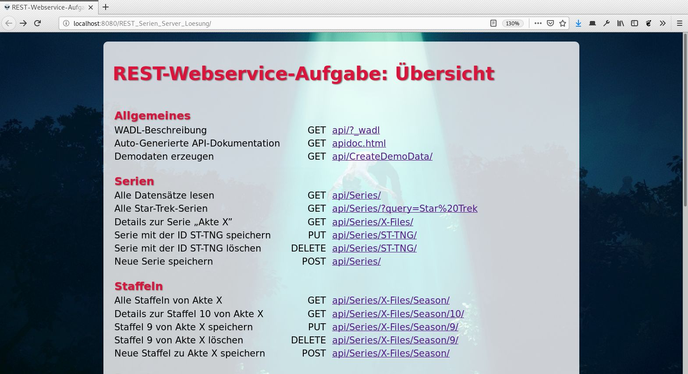
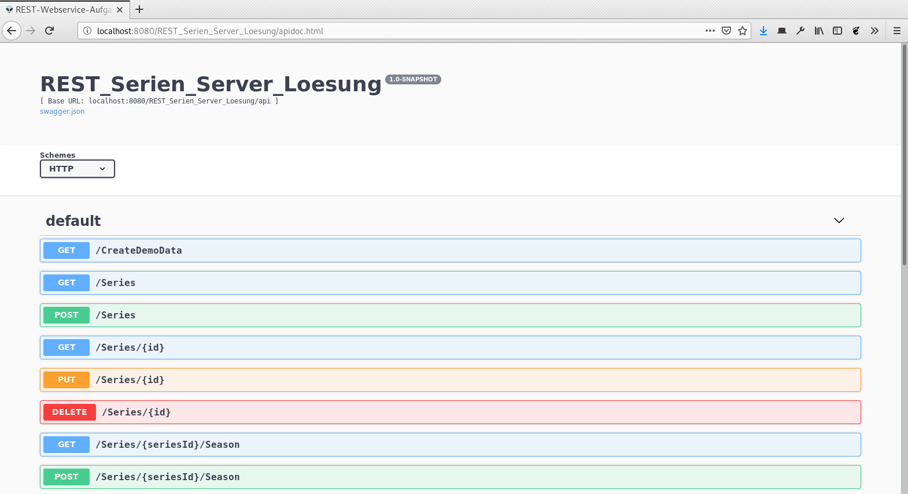
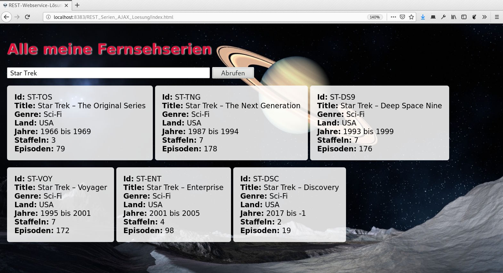
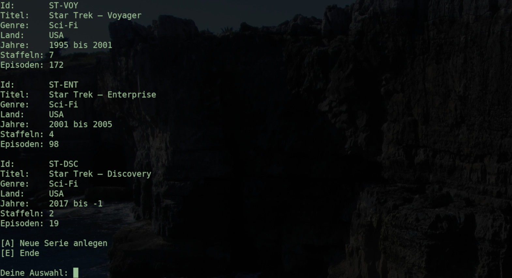

Alle meine Stromkreise ist der Name einer beliebten Daily Soap aus Futurama mit der berühmten Schauspieleinheit Calculon (in der heutigen Zeit eher bekannt als David Duchovny aus Akte X oder Californication) in der Hauptrolle. Leider wird die Serie erst ab dem Jahr 3000 ausgestrahlt, so dass wir uns bis dahin mit dem Fernsehprogramm der heutigen Zeit begnügen müssen. Doch auch heute gibt es ja genügend gute Serien, mit denen man sich die ein oder andere Nacht um die Ohren schlagen kann. 🛋️ In dieser Aufgabe soll es deshalb darum gehen, eine kleine Datenbank zur Verwaltung unserer Lieblingsserien zu programmieren.
|  |  |
|  |  |
Die Anwendung besteht aus folgenden Teilkomponenten, die wir hier zu Ende programmieren wollen:
| 🌍 | Ein REST-Webservice zur eigentlichen Verwaltung der Daten |
| 📱 | Ein in JavaScript programmierter AJAX-Client |
| 💻 | Ein in Java programmierter Konsolen-Client |
Vervollständige den JavaScript-Code in der Datei index.html so, dass eine Liste mit den gesuchten Serien vom Server abgerufen wird. Den Abruf kannst du wahlweise mit dem älteren XmlHttpRequest-Objekt oder der neueren Fetch API machen. Letzteres ist etwas komfortabler und funktioniert inzwischen auch mit allen verbreiteten Browsern:
let antwort = await fetch("http://…", {
method: "get",
headers: {
"accept": "application/json"
}
});
let daten = await antwort.json();
Nachdem du die Daten vom Server abgerufen hast, musst du sie natürlich noch darstellen. Hierfür musst du dem Element #ergebnis, in dem die Ergebnisse angezeigt werden sollen, zunächst die CSS-Klasse unsichtbar entfernen. Anschließend musst du je Serie ein <div> mit den empfangenen Daten erzeugen:
<div>
<b>Id:</b> … <br/>
<b>Title:</b> … <br/>
<b>Genre:</b> … <br/>
<b>Land:</b> … <br/>
<b>Jahre:</b> … bis … <br/>
<b>Staffeln:</b> … <br/>
<b>Episoden:</b> … <br/>
</div>